| десятичный образ | точечный образ | жестовый образ |
| 0 | 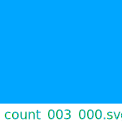 | 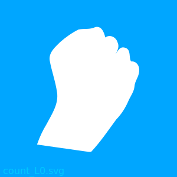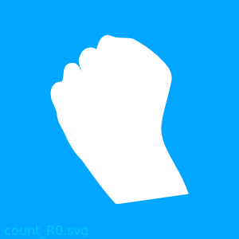 |
| 1 | 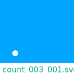 | 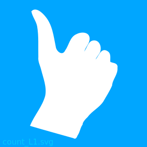 |
| 2 | 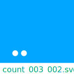 | 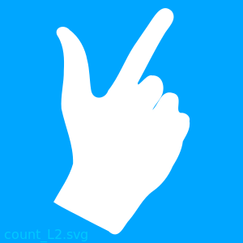 |
| 3 | 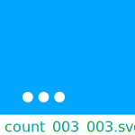 | 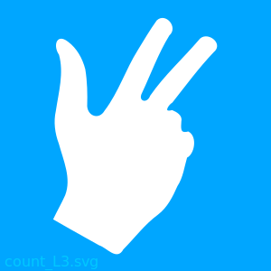 |
| 4 | 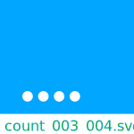 |  |
| 5 | 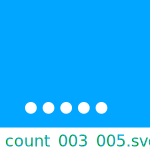 |  |
| 6 | 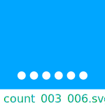 | 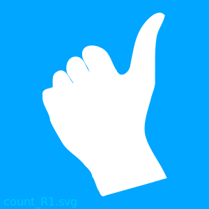 |
| 7 | 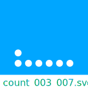 | |
| 8 | 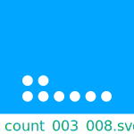 | |
| 9 | 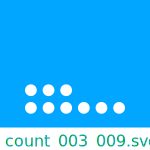 | |
| 10 | 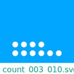 | |
| 11 | 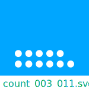 | |
| 12 | 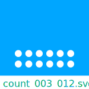 | 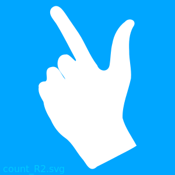 |
| 13 | 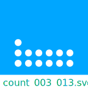 | |
| 14 | 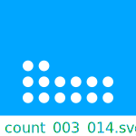 | |
| 15 | 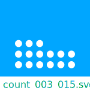 | |
| 16 | 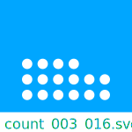 | |
| 17 | 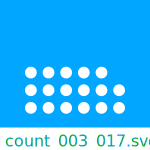 | |
| 18 | 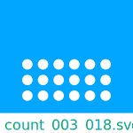 |  |
| 19 | 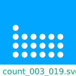 | |
| 20 | 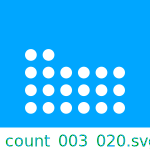 | |
| 21 | 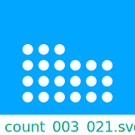 | |
| 22 | 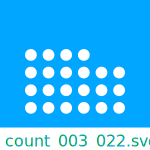 | |
| 23 | 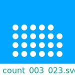 | |
| 24 | 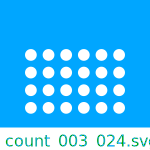 | 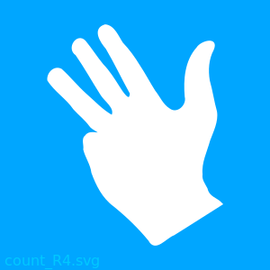 |
| 25 | 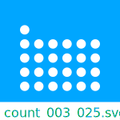 | |
| 26 | 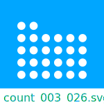 | |
| 27 | 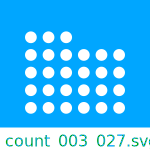 | |
| 28 | 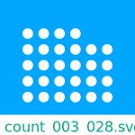 | |
| 29 | 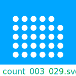 | |
| 30 | 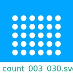 | 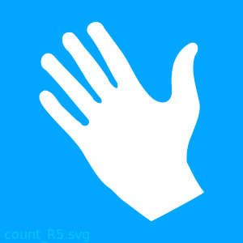 |
| 31 | 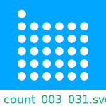 | |
| 32 | 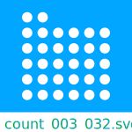 | |
| 33 | 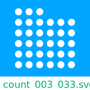 | |
| 34 | 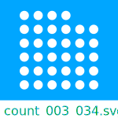 | |
| 35 | 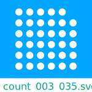 | |